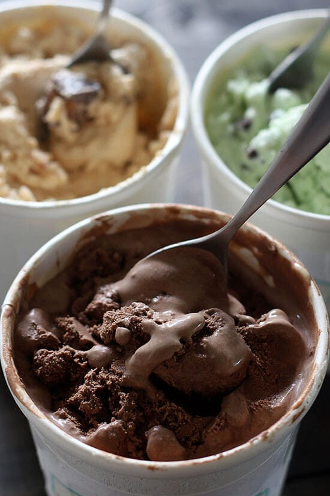

Ice Cream

Ice Cream is a sweetened frozen food typically eaten as a snack or dessert.
It may be made from dairy milk or cream and is flavoured with a sweetener, either sugar or an alternative, and any spice, such as cocoa or vanilla.
It can also be made by whisking a flavored cream base and liquid Nitrogen together. Colorings are usually added, in addition to stabilizers.
The mixture is stirred to incorporate air spaces and cooled below the freezing point of water to prevent detectable ice crystals from forming.
The result is a smooth, semi-solid foam that is solid at very low temperatures (below 2 °C or 35 °F).
It becomes more malleable as its temperature increases.
Ingredients:
2 Ingredient Method
- 2 cups heavy cream, chilled
- 1 (14 ounce) can sweetened condensed milk, chilled
- 1/2 teaspoon vanilla extract
Freeze & Stir or Plastic Bag Methods:
- 1 1/4 whole milk, chilled
- 3/4 cup granulated sugar
- 2 cups heavy cream, chilled
- 1 tablespoon vanilla extract
- 1/4 teaspoon salt
Directions:
2 Ingredient Method
- In the bowl of an electric mixer, whip the cream until stiff peaks form.
- On low speed, mix in the condensed milk, vanilla, and any flavorings.
- Pour into a resealable container, cover the surface with plastic wrap, then seal.
- Freeze for at least 6 hours, or until firm. Keep stored in the freezer
Freeze & Stir or Plastic Bag Methods
- In a large bowl, use an electric mixer to beat the milk and sugar until the sugar is dissolved, 1 to 2 minutes.
- Stir in the cream, vanilla, and salt until combined.
- If mixture isn't cold, place in the refrigerator until chilled, about 30 minutes.
For the freeze & stir method:
- Place the mixture in a deep stainless steel baking dish and freeze for 45 minutes.
- As it begins to freeze near the edges, remove it from the freezer and stir vigorously with a spatula, then return to the freezer.
- Continue to check the mixture every 30 minutes, stirring vigorously as it's freezing.
- If you have a hand held mixer or blender, use one of those. Repeat this process for 2 to 3 hours, or until frozen.
Plastic bag method:
- Place the ice cream mixture in a quart size resealable bag, squeezing out as much air as possible and sealing tightly.
- Place this bag inside another quart bag, again squeezing out as much air as possible and sealing tightly.
- Put the bags inside a gallon size resealable bag and fill with about 4 cups crushed ice then sprinkle with 4 tablespoons coarse salt.
The salt lowers the freezing point of the ice and creates an extra cold environment that absorbs heat, causing the ice cream base to freeze.
- Squeeze out all the air and seal tightly.
- Wrap the bag in a towel or put gloves on before shaking vigorously and massaging the bag, making sure the ice is surrounding the ice cream mixture constantly.
- Shake for about 5 to 8 minutes, or until the ice cream is frozen. The more vigorously you shake, the smoother your ice cream will be.